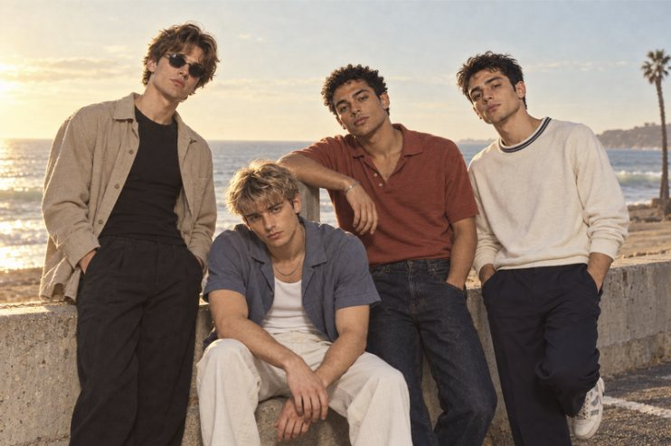
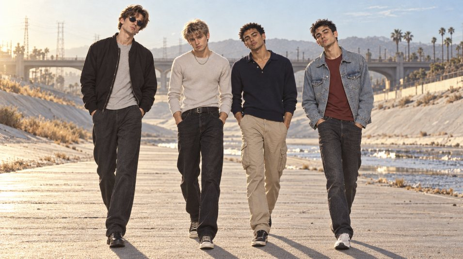
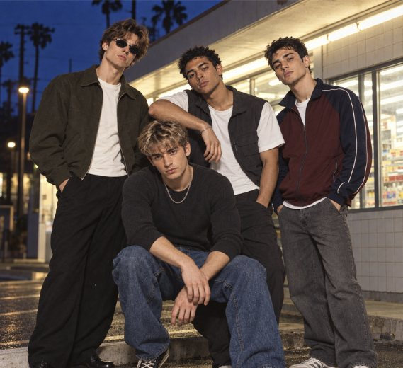
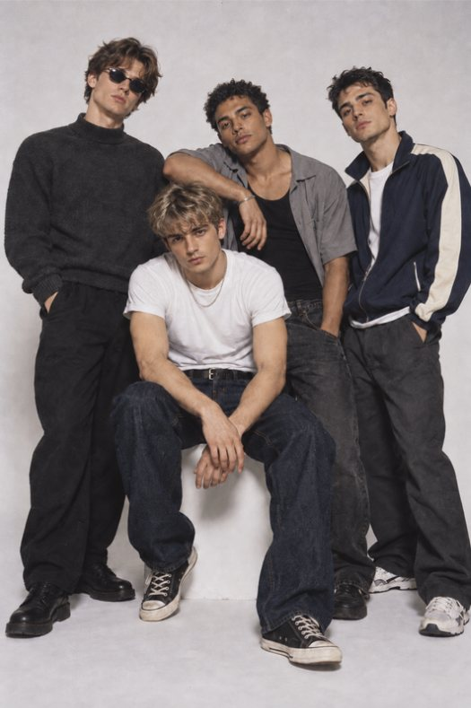

Lead vocals, acoustic guitar
Noah
"Noah forgets the very last note."

Screen Door are four friends from the same small town. Tomorrow it's a car, a city and work. Tonight there's a cassette left to fill.
Their sound is mellow 90s jangle: strummed acoustic, a soft fuzzy electric underneath, brushed drums, a tambourine kept low in the mix and a laid-back, half-spoken vocal. They recorded Going Nowhere Fast in one afternoon, from PLAY until the tape ran out.
The line-up
Lead vocals, acoustic guitar
"Noah forgets the very last note."
Lead guitar, the jangly 12-string
"Hudson's got the only three chords he knows."
Bass, whistling
"Elijah whistles the part he wrote."
Drums, tambourine
"Mason keeps time on the porch with his toes."
Lines from "Out of Tune", track 07.


